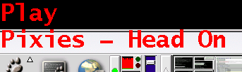
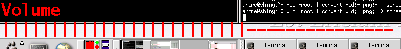

XOSD
XOSD displays text on your screen, sounds simple right? The difference is it is unmanaged
and shaped, so it appears transparent. This gives the effect of an On Screen Display, like
your TV/VCR etc.. The package also includes an xmms plugin, which automatically displays
various interesting things as they change (song name, volume etc...) I haven't been involved
in its development for over 15 years now, but a few places still link back there. I don't
know what state it is in, but the home page is now
on SourceForge. Or mirrored on
Github - AndreRenaud/XOSD


Other software which uses XOSD